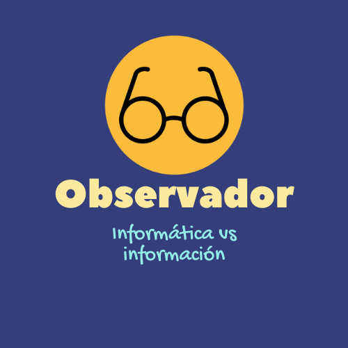

<!--
  Generated template for the LogrosU1Page page.

  See http://ionicframework.com/docs/components/#navigation for more info on
  Ionic pages and navigation.
-->
<ion-header>
  <ion-navbar color="nvColor">
    <ion-title>logros-u1</ion-title>
  </ion-navbar>
</ion-header>

<ion-content padding class="fn">


  <ion-card class="card-content2">
    
  </ion-card>

  <ion-card class="card-content2">
    
  </ion-card>


</ion-content>